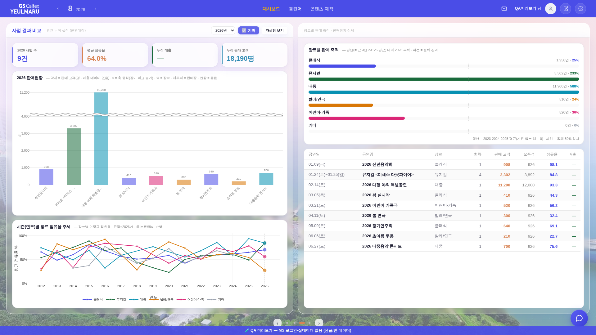
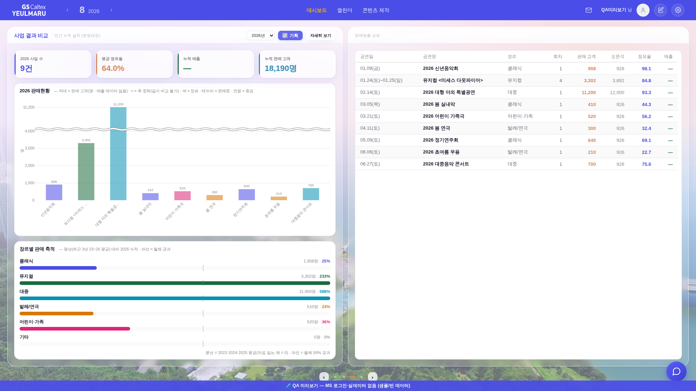
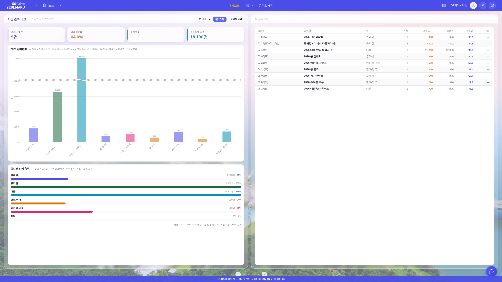

지시(운영자): 「장르별 축적을 좌측 하단부로 완전히 크기를 대체해주고, 지금 우측을 그냥 리스트업 쭉 해당 크기 내에서 나오게 해줄래?」
화면 = QA 진입로(?qa=admin) + 레이아웃 스모크와 같은 목데이터(tools/qa_mock_ops.mjs) · 실데이터·PII 미접촉. 1920×1080.


| 자리 | 전 | 후 |
|---|---|---|
| 좌 열(3-1) | KPI · 판매현황 막대 · 시즌(연도)별 장르 점유율 추세 | KPI · 판매현황 막대 · 장르별 판매 축적 |
| 우 열(3-2) | 장르별 판매 축적 · 판매현황 상세 목록 | 판매현황 상세 목록 단독(박스 안선까지 전면) |
| 우 열 라벨 | 장르별 판매 축적 · 판매현황 상세 | 판매현황 상세 |
| 시즌 추세 | 인라인 3면 좌 하단 | 인라인에서 내림 → 전체 모달 「자세히 보기」(openBusinessBoard)에 그대로 존치 = 잃는 정보 0 |
data-bizmfill 마킹을 그대로 승계(좌 열일 때만)._bizFitSeason 좌 열 흡수 차트 = ['bizm-season','bizm-chart'] → ['bizm-chart']. 남는/모자란 몫은 판매현황 막대가 흡수(1920×1080 실측 430→387px).data-bizmfill data-bizmcap 그대로 — 이제 박스의 유일한 카드라 상단~안선 전체를 차지하고, 행이 많으면 그 안에서 스크롤._bizDrawSeason('bizm-season',…) 호출 철거. 모달의 인자 없는 _bizDrawSeason()(biz-season-chart)은 무접촉.큰 화면에서 카드가 늘어날 때 생기는 아래 여백을 위·아래로 나누려 했으나, flex 아이템은 max-height가 걸리면 줄어든다.
그러면 _srailAlignTop의 넘침 흡수 판정(scrollHeight > 안선−자기상단)이 「걸면 안 넘침 → 해제 → 다시 넘침」으로 진동해 멱등이 깨진다
— 1440×820 실측 = 좌 흰 도형이 안선 아래 53.1px(스모크 FAIL). 블록 레이아웃 유지로 되돌렸다.

막대 560px(상한) · 남는 187px은 data-bizmfill이 축적 카드를 안선까지 늘려 흡수 → 좌·우 흰 하단선 Δ0.1px.
tools/smoke_layout.mjs — PASS: 2560×1440 · 1920×1080 · 1600×900 · 1512×982 · 1440×820.check_design 1590/1590 · :root 2/0 · check_refs · check_wiring 전부 통과. 새 raw hex·새 토큰·새 컴포넌트 0.